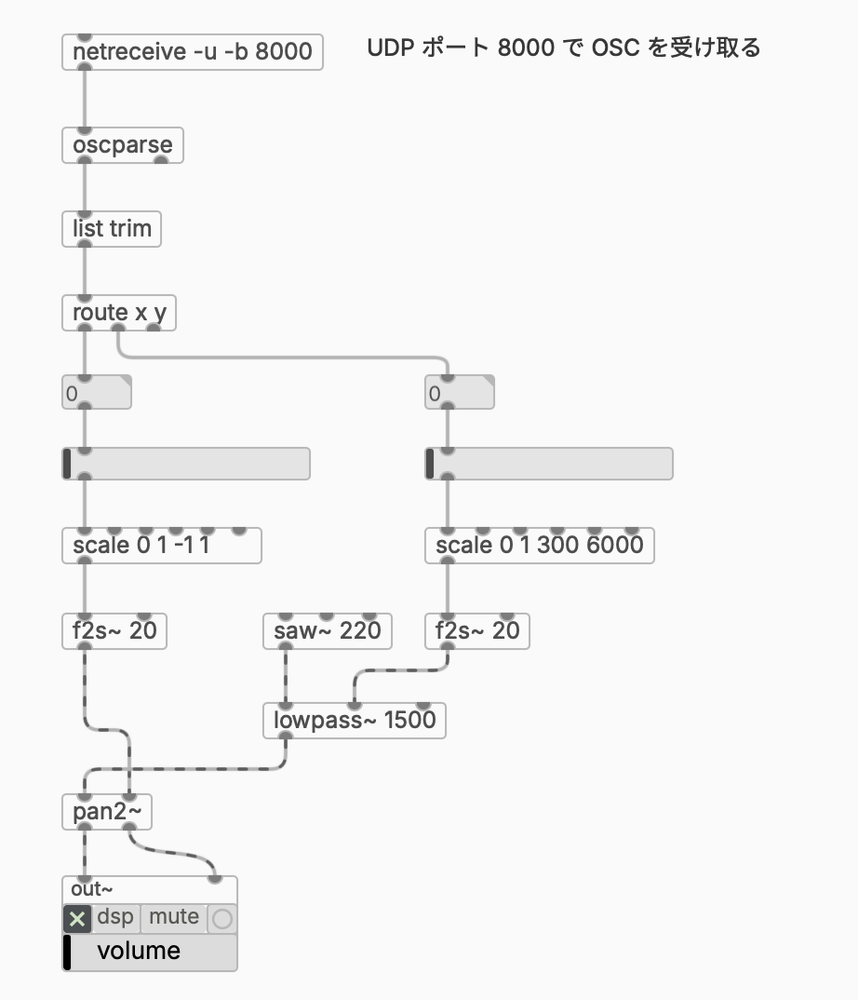
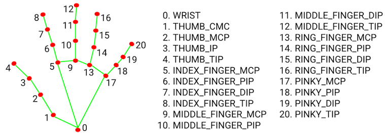
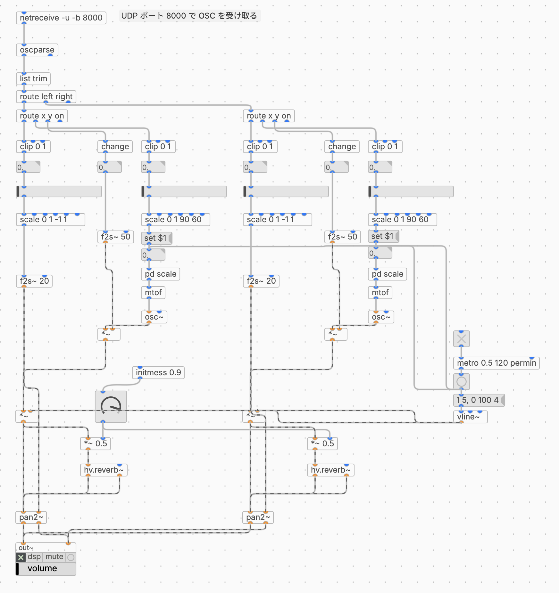

滋賀大学 自主ゼミ「サウンドプログラミング入門」 2026年度 春学期
サンプルパッチ② 2.5節 手の位置情報をOSCで受け取るパッチ
第8回では、ブラウザから MIDI を送って plugdata を鳴らしました。今回はもう一方の経路である OSC を扱います。MIDI と違って送る値を自分で決められるので、センサやカメラから取れた数値をそのまま送れます。後半では、画像認識ライブラリのMediapipeを使ってカメラに映った手の動きで音を操作します。
OSC（Open Sound Control）は、ネットワーク経由で制御データをやりとりする仕組みです。1つのメッセージは アドレス と 引数 の組でできています。
/hand/x 0.62↑ ↑アドレス 引数（値）
アドレスはファイルのパスのような形式で、自由に決められます。通信には UDP を使い、ポート番号 で受け口を指定します。送る側と受ける側で同じ番号を使っていれば繋がります。今回は 8000 番を使います。
[netreceive -u -b 8000]|[oscparse]|[list trim]|[route x y]
[netreceive -u -b 8000] … 8000番ポートで待ち受けます。-u はUDP、-b はデータをそのままの形で出す指定です。
[oscparse] … OSCのデータをPdのリストに変換します。/x 0.5 は x 0.5 になります。/hand/x のように階層があると hand x 0.5 と区切りごとに分解されます。
[list trim] … リストの先頭をメッセージの名前として扱えるようにします。これがないと次の [route] が反応しません。
[route x y] … 名前ごとに値を振り分けます。
あとは [scale] で使いたい範囲に変換し、[f2s~] でシグナルにしてからパラメータに繋ぎます。まずは1つの値を受け取る形で試して、2節で両手ぶんに広げます。

図1.2 [netreceive] と [oscparse] で OSC を受け取る
Python は、用途ごとに専用の環境を作ってから使います。Anaconda（または Miniconda）を使うと、Windows でも macOS でも同じコマンドで用意できます。
conda create -n plugdata python=3.12conda activate plugdatapip install python-osc
conda create は環境を作るコマンド、conda activate はその環境に入るコマンドです。ターミナルの行頭が (plugdata) になっていれば入れています。次回以降も、作業を始めるときは毎回 conda activate plugdata を実行してください。
| コマンド | 内容 |
|---|---|
| conda create -n plugdata python=3.12 | plugdata という名前の環境を作る（最初の1回だけ） |
| conda activate plugdata | その環境に入る（毎回） |
| conda deactivate | 環境から出る |
| conda env list | 作った環境の一覧を見る |
python=3.12 とバージョンを指定しているのは、2節で使う MediaPipe が新しい Python では動かないためです。ここで合わせておけば、後から入れ直す必要がありません。
Anaconda が入っていない場合は、Miniconda を入れてください。フルの Anaconda は数GBありますが、Miniconda なら軽く済みます。
https://www.anaconda.com/download/success
⚠️ base 環境のままでは動かないことがあります
Anaconda を入れた直後は
(base)という共用の環境に入っています。ここには他のライブラリが多数入っていて、あとから入れるライブラリと衝突することがあります。必ず上の手順で専用の環境を作ってください。
送信自体は3行です。
from pythonosc.udp_client import SimpleUDPClientclient = SimpleUDPClient("127.0.0.1", 8000)client.send_message("/x", 0.5)
127.0.0.1 は「自分自身」を表すIPアドレスで、同じPCの中で完結します。ここを別のPCのIPアドレスに変えれば、そのまま外へ送ることもできます。
連続した値を送るときはループの中で繰り返しますが、送る間隔をあける ことが大切です。ループを全速力で回すと1秒間に数万回送ることになり、受け取る側が詰まります。センサの値なら1秒間に30〜60回で十分です。
while True:client.send_message("/x", float(x))time.sleep(1 / 30) # 1秒間に約30回
送る値は 0〜1に正規化しておく と扱いやすくなります。周波数にするかパンにするかは plugdata 側の [scale] で決める、という分け方にしておけば、マッピングを変えるときにPythonのコードを触らずに済みます。
PythonからOSCでplugdataに値を送信
MediaPipe は Google が公開している、映像から人の姿勢・手・顔などを推定するライブラリです。Hand Landmarker は、カメラに映った手から 21個のランドマーク を検出します。座標は画像の大きさで割った 0〜1の値 で返ってくるので、そのまま送れば正規化済みの状態になります。
サンプルコード②で使うのは 8（人差し指の先）だけです。他の点は、検出できているかを目で確かめるための描画に使っています。

図2.1 手のランドマーク（21点） 出典：Google AI Edge「Hand landmarks detection guide」 https://ai.google.dev/edge/mediapipe/solutions/vision/hand_landmarker （Creative Commons Attribution 4.0 License）
1.3節で作った環境に、MediaPipe とカメラを扱うライブラリを追加します。
conda activate plugdatapip install "mediapipe==0.10.21" opencv-python
バージョンを 0.10.21 と指定しているのは、これより新しい MediaPipe が環境によって起動時に落ちるためです。この組み合わせなら Windows でも macOS でも動きます。
続いて、検出に使うモデルファイルをダウンロードします。ライブラリには含まれていないので、別途手に入れる必要があります。スクリプトと同じフォルダで実行してください。
curl -O https://storage.googleapis.com/mediapipe-models/hand_landmarker/hand_landmarker/float16/1/hand_landmarker.task
hand_landmarker.task がスクリプトと並んでいればOKです。
ネット上には
mp.solutions.handsから始まるコードが多く残っていますが、これは古い書き方です。新しい MediaPipe では削除されており、mediapipe.tasksを使う書き方に置き換わっています。検索して出てきたコードが動かない場合は、この違いを疑ってください。
やっていることは1.4節と同じです。カメラから1フレーム取り込み、手を検出し、指先の座標をOSCで送る、という流れを繰り返します。
サンプルコード②では 両手 を検出しています。num_hands=2 を指定すると、最大2つ分の結果が返ってきます。
options = HandLandmarkerOptions(base_options=BaseOptions(model_asset_path=MODEL_PATH),running_mode=RunningMode.IMAGE,num_hands=2,)
ここで問題になるのが、どちらが左手でどちらが右手か です。検出結果の並び順は固定ではないので、1番目・2番目という扱い方をすると、途中で入れ替わって音源も入れ替わってしまいます。
MediaPipe は左右の判定結果を handedness として返してくれるので、これを使ってOSCのアドレスを分けます。
xxxxxxxxxxfor hand, handed in zip(result.hand_landmarks, result.handedness):label = handed[0].category_name.lower() # "left" または "right"index_tip = hand[8] # 人差し指の先client.send_message(f"/{label}/x", clamp01(index_tip.x))client.send_message(f"/{label}/y", clamp01(index_tip.y))
送られるアドレスは /left/x /right/x のようになります。これで、左手は必ず /left、右手は必ず /right に届きます。
手が画面からはみ出すと、座標は0〜1を超えた値で返ってきます。そのまま送ると音が飛ぶので、clamp01() で範囲に収めてから送っています。
xxxxxxxxxxdef clamp01(value):return min(max(float(value), 0.0), 1.0)
手をどけたときに音を止めたいので、検出できているかどうか も /left/on /right/on として送る形にします。1が「いま写っている」、0が「写っていない」です。MediaPipe は一瞬だけ検出を取りこぼすことがあるので、続けて見失ったフレーム数 を数えて、一定数を超えてから0を送信するようにします。
xxxxxxxxxxLOST_LIMIT = 8 # 8フレーム続けて見失ったらオフにするfor label in ("left", "right"):if detected[label]:lost[label] = 0else:lost[label] += 1client.send_message(f"/{label}/on", 1 if lost[label] < LOST_LIMIT else 0)
1秒に約30回送っているので、8フレームは270msほどです。一瞬の検出漏れでは切れず、本当に手をどけたときだけオフになります。数字を大きくすれば粘り、小さくすれば反応が速くなります。
判断できる側が判断する というのが考え方です。手が写っているかどうかを知っているのはPython側なので、そこで決めて結果だけを送ります。plugdata側で「値が来なくなったこと」を検出しようとすると、[del] でタイムアウトを測るような回りくどい作りになります。
なお、カメラ映像そのものは表示せず、黒い画面にランドマークだけを描いています。人差し指の先を赤、他の点を緑にしてあるので、どの点を送っているかがひと目で分かります。
/left/x は [oscparse] で left x 0.62 に分解されるので、1.2節の [route] を2段にします。
xxxxxxxxxx[netreceive -u -b 8000]|[oscparse]|[list trim]|[route left right]| \[route x y on] [route x y on]| |左手で操作する音源 右手で操作する音源
1.2節で説明した「アドレスに階層があると区切りごとに分解される」という性質が、ここで効いてきます。1段目で左右を分け、2段目でパラメータを分ける、という形です。
各アウトレットの使い道は次の通りです。
| アドレス | plugdata側の処理 | 割り当て |
|---|---|---|
| x | [clip 0 1] → [scale 0 1 -1 1] → [f2s~ 20] | パン |
| y | [clip 0 1] → [scale 0 1 90 60] → [pd scale] → [mtof] | 音の高さ |
| on | [change] → [*~] | 音のオンオフ |
x と y に [clip 0 1] を入れているのは、Python側の clamp01() と同じ役割です。送る側で防いでいても、受け取る側にも入れておくと確実です。
y を [scale 0 1 90 60] としているのは、上下を反転させる ためです。カメラの座標は上が0なので、そのままだと手を上げたときに低い音になってしまいます。90から60へ向かう指定にすることで、手を上げると高い音になります。このあと記述する [metro] のタイミングでトリガーを出したいので、値を[set $1( に繋いで、それをnumberオブジェクトに送っておきます。そうすることで、numberがmetroのバングを受け取ってからピッチが変化するようになります。
on に [change] を挟んでいるのが要点です。Python側は毎フレーム値を送ってくるので、1が届き続けます。[change] は 前回と違う値が来たときだけ 出力するので、切り替わった瞬間だけが通ります。これがないと、[metro] などを繋いだときに毎フレーム再スタートしてしまいます。
サンプルパッチ①では、[metro] と [vline~] で作ったエンベロープを左右の音源に共通で配っています。テンポはplugdata側で決まるので、手はパンと音程だけを担当する形です。同じリズムで2つの音が鳴り、手を動かすと和音が変化していきます。
推定結果は細かく揺れるので、[f2s~] に移行時間を与えて滑らかにします。第7回でランダムパンニングに使ったのと同じ考え方です。

図2.5 Mediapipeで両手の位置情報を受け取るサンプルパッチ
実際に動かすと下記の動画のように手を検出した際に、シーケンサーのように音が鳴るようになります。手の上下位置で音高が変化し、左右の位置に合わせて音像が移動するようになっています。右手と左手の検出が可能なので、左右の手のそれぞれの音を同時にコントロールできるようになります。
MediaPipeで手の動きを送る